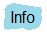
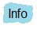

HumMod model validation compares model predictions to trusted data. We are using the term validation on this page to mean both model validation and model verification.
A significant challenge in model validation is finding suitable validation data.
Here is our idea of some of the properties of suitable data.
Data is obtained from humans or there is a highly reliable way to scale animal data to human values. The reason for this is that HumMod’s predicted values are typically for a middle-aged human male.
Data includes a mean value (but single value will suffice). The reason for this is that such a value is used directly in calculating the fit metric that we use in model validation.
The variance (standard deviation) in the data is reported or can be inferred from the data source. The reason for this is that this information is used to quantitate the span parameter in the fit metric calculation.
The experimental protocol is known. The reason for this is that we must create a comparable simulation protocol before the fit metric can be applied. Protocols such as exercise or going to altitude can produce useful comparisons. Just resting quietly is also a valid experimental protocol and the data can be compared to HumMod’s steady-state values.
Please send us via E-mail your thoughts on suitable data to use in HumMod model validation. Including references, especially PMID's, and attaching relevant figures is always useful. Where appropriate, we'll add the data to this Web site and give you proper acknowledgement.